For the “fastest-growing sport in America,” new competition is everywhere — entrepreneurs vying to get in on the ground floor of an exciting new market. So how does a brand-new pickleball facility opening in New York City make its mark? That’s the question AMP was tapped to answer.
Our partnership with PKLYN started from its very inception. The founder worked with AMP to come up with the name of the club — PKLYN, a riff on BKLYN, its home borough, as well as a phonetic reference to the name of the sport. From there we went through an iterative process to build out the look, feel, and function of the logo and brand, both as it would live online and as it would manifest in the physical facility: everything from the paint colors to the physical decals to the accents on different pieces of furniture. It was a true collaboration that touched every aspect of the brand experience, with deep attention paid to how this brand would live and function in the lives of the people who would make this club their home. Since opening in 2024, that partnership has continued to blossom, with new avenues added along the way — content strategy and production for social, support for physical collateral like custom paddles, bar menus, flyers for their programming, a huge outdoor garage mural, merchandise and more. It's one thing to create a logo, a color palette, and the foundations of a brand identity for a client. It's another to keep working with that client to flex that brand framework around new needs, new seasons, and the customer relationships that fuel the heart of its business.
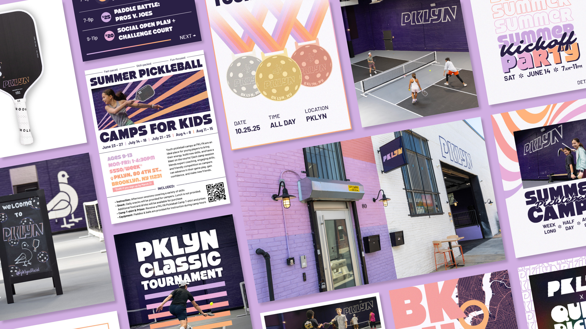
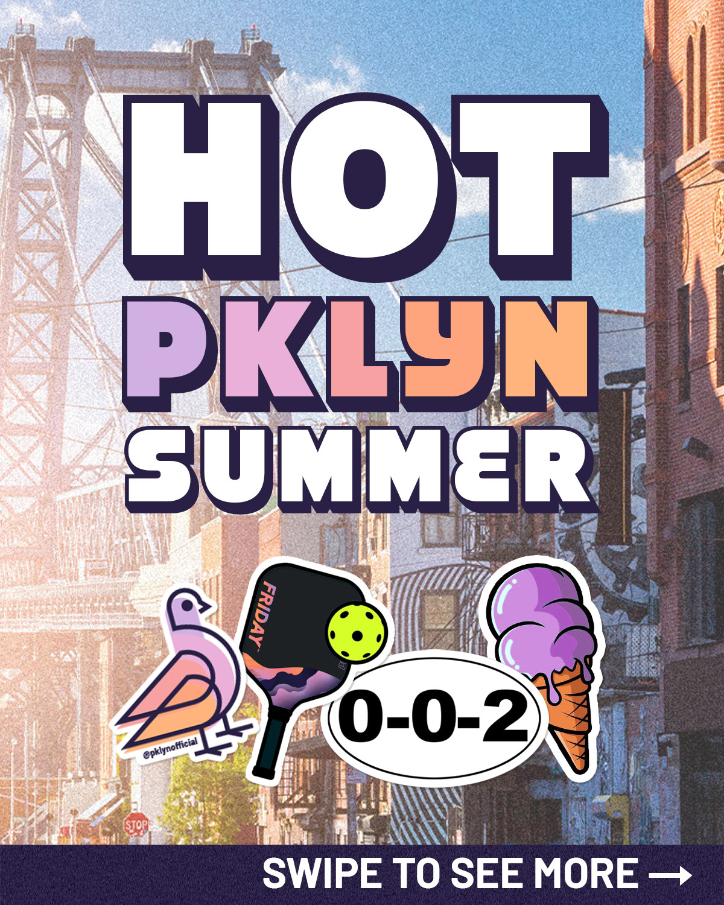
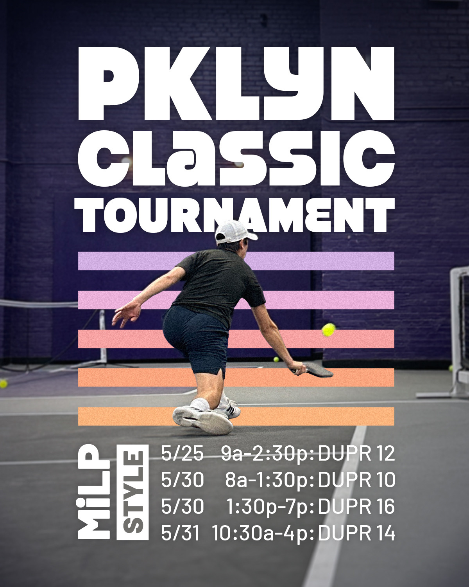
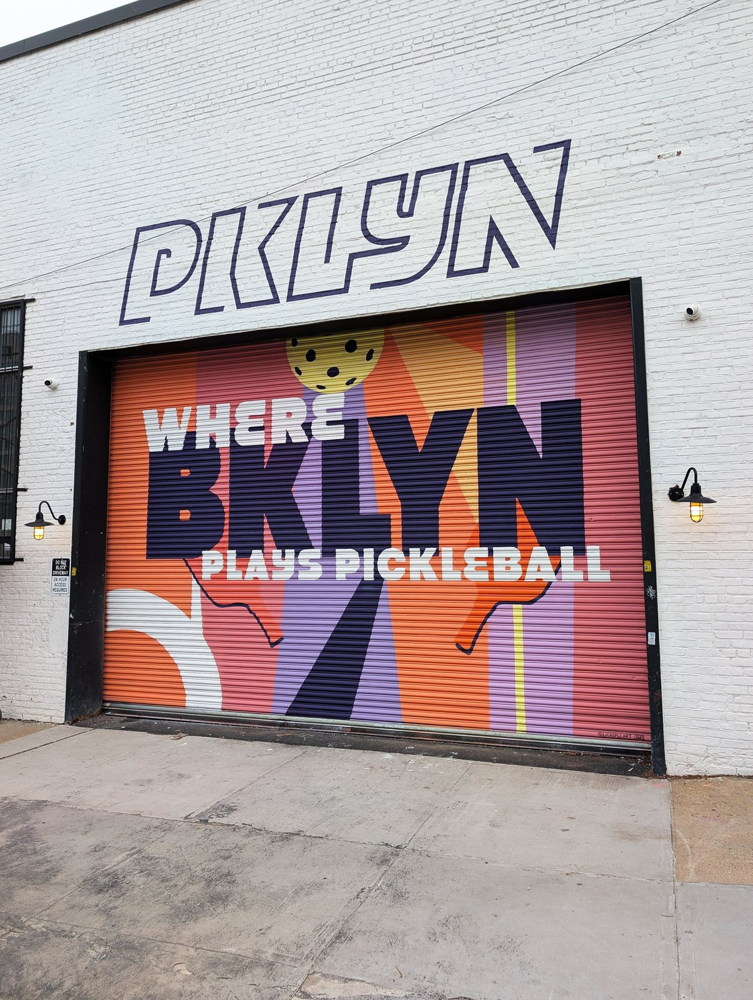
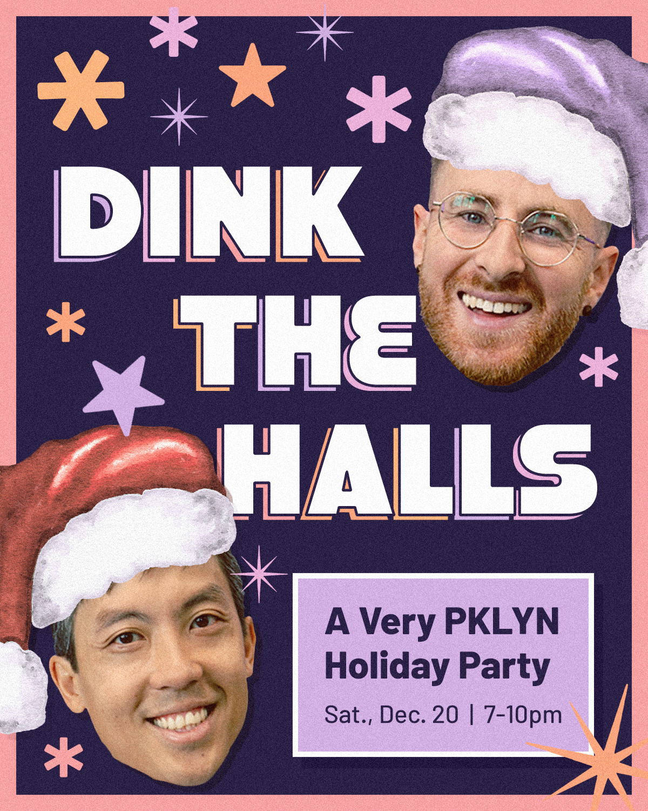
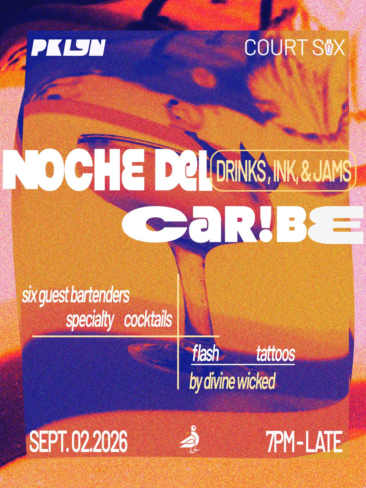
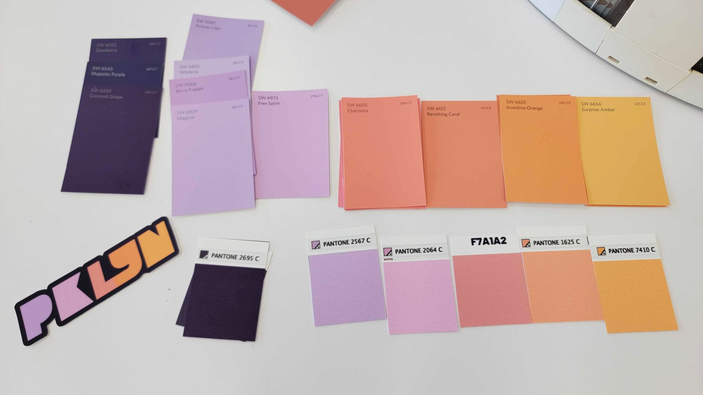
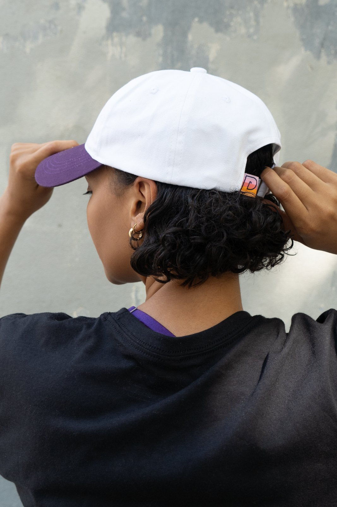
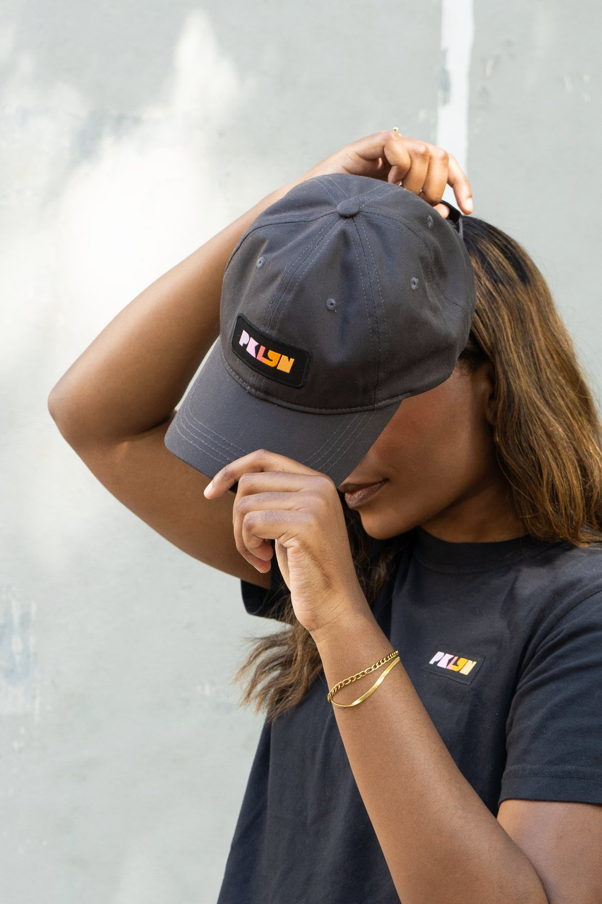
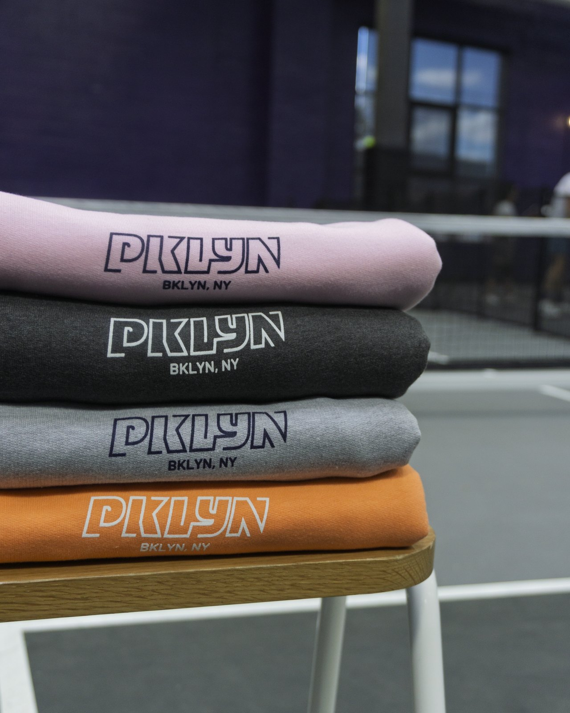
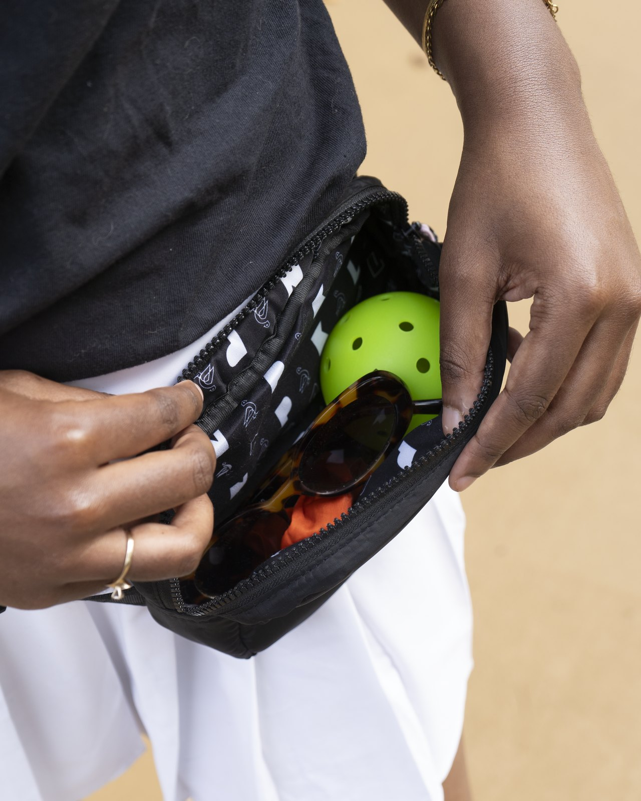
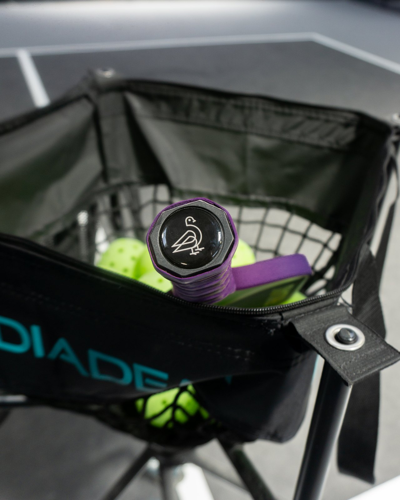
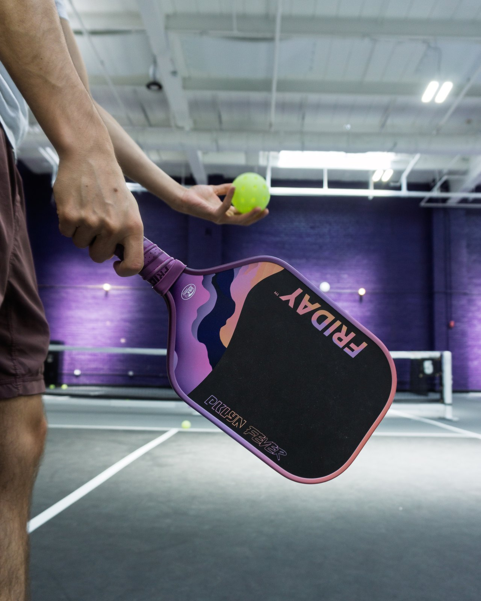